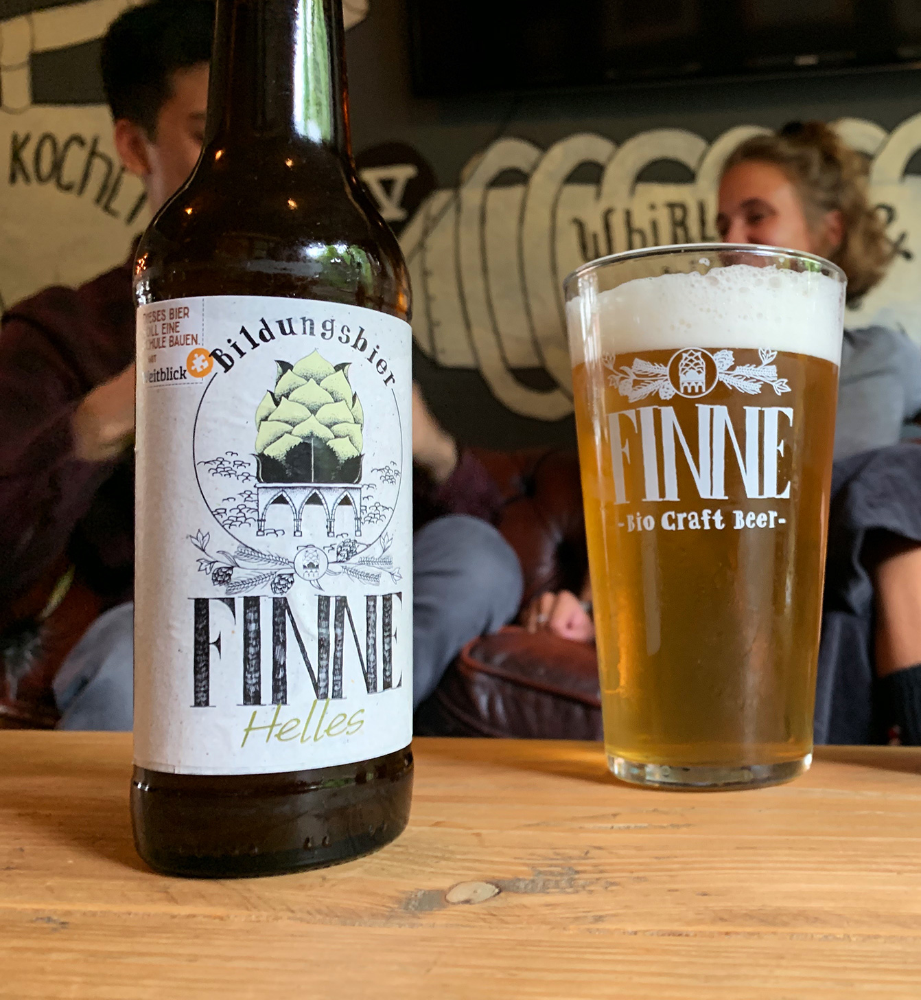
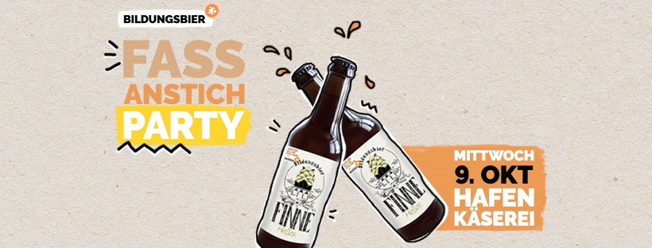
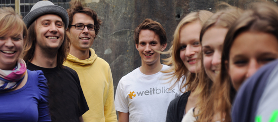

Bildungsbier

Das Projekt
Gut gebraut ist halb gebaut
Gemäß diesem Motto hält von Oktober bis Dezember 2019 jeder, der ein Finne Helles genießt, auch einen Baustein für eine Schule in Westafrika in der Hand. Dort, genauer gesagt in Benin, wollen wir von der Studierendeninitiative Weitblick Münster e.V. und der Münsteraner Finne Brauerei den Bau einer neuen Schule finanzieren. Von jeder verkauften Flasche Bildungsbier fließen dazu mindestens 5 Cent pro Flasche in den Bau der Schule.
Hopfen ist die Basis für ein gutes Helles, Bildung der Grundstein für ein selbstbestimmtes Leben. Doch wie es mit so vielen Dingen nun mal ist, müssen für die gute Sache viele an einem Strang ziehen! Damit das Bildungsbier und damit auch der Schulbau ein voller Erfolg werden, schnappt Euch ein Bildungsbier und seid dabei!
Veranstaltungen

Fassanstich Party
- Wann: Mittwoch, 9. Oktober 2019 von 18:00 bis 23:30
- Wo: Hafenkäserei Am Mittelhafen 20, 48155 Münster
- Eintritt: Frei / wieviel du willst
Gemeinsam starten wir das Projekt Bildungsbier und das möchten wir gebührend feiern. An diesem Abend wollen wir in der Hafenkäserei gemeinsam mit Euch tanzen, Bier trinken und Spaß haben. Wir starten um 18 Uhr mit einer kleinen Einführung in das Projekt und anschließendem Fassanstich. Danach habt ihr Zeit bei beninischen Leckereien das erste Bierchen zu genießen und euch auszutauschen. Ab 21 Uhr drehen wir dann die Musik auf und wollen mit euch gemeinsam das Tanzbein schwingen. Bei der Party dreht sich alles um das Bildungsbier. Da alle Erlöse des Abends ebenfalls in die Finanzierung der Schule fließen, ist die Party frei nach dem Motto „zahl was du möchtest!“. Eintritt gibt es keinen, aber jeder ist herzlich eingeladen, einen kleinen Teil an das Projekt zu spenden! Also erzählt es allen, bringt gute Laune mit und lasst uns einen tollen Abend verbringen!
Weitblick Münster

Weitblick ist eine Studierendeninitiative an der Uni Münster. Gemeinsam setzen wir uns für einen
weltweit gerechteren Zugang zu Bildung ein. Dazu fördern wir die Schul- und Berufsbildung
von Kindern und Jugendlichen in Deutschland und in unseren Partnerprojekten in Benin, Honduras,
Madagaskar und Kambodscha.
Mehr Infos zu
Weitblick Münster.
Finne Brauerei

Die Finne ist eine Craft Beer Brauerei in Münsters Kreuzviertel. Wir brauen Klassiker, Kreativbiere
und saisonale Spezialitäten aus besten Bio-Zutaten. Neben dem verantwortungsvollen Genuss
unserer Biere ist für uns die Übernahme gesellschaftlicher Verantwortung eine
Herzensangelegenheit!
Mehr Infos zur
Finne Brauerei.
Unterstütze uns
Je mehr Aufmerksamkeit das Projekt bekommmt, desto mehr Bier wird auch verkauft. Für uns bedeutet es mehr Einnahmen die direkt in die Projektarbeit fließen Daher kannst auch du zum Erfol des Projektes beitragen!
- Erzähl deiner Familie, Freunden und Bekannten vom Bildungsbier
- Folge uns auf Instagram um nichts zu verpassen
- Verkaufe das Bildungsbier auf euren Veranstaltungen oder Partys
- Kauf das Bildungsbier in verschiedenen Münsteraner Märkten und Gastronomien oder im Finne Online Shop
Bestellen
Fragen oder Anregungen? Wir freuen uns von dir zu hören! Deine Ansprechpartner sind.
Robin Frank
Weitblick Münster
robin.frank@weitblicker.org
Svea Brauckmann
Finne Brauerei
svea.brauckmann@finne-brauerei.de
Du bist Veranstalter*in oder Gastronom*in?
Hier direkt bei der Finne bestellen!


{kind=link}